The Amazing Game Engine [AGE] is a state-authoritative narrative engine. AGE uses generated prose, but generated prose is not authoritative by itself. The engine keeps truth in structured state, validates proposed changes, commits approved changes, and then renders prose from the committed state.
A large language model [LLM] is a statistical text model that can generate, transform, classify, and summarize language. AGE may use an LLM to render scene prose, dialogue, summaries, classifications, and possible state deltas. AGE does not permit an LLM to directly advance time, move objects, create inventory, resolve conflicts, or alter canonical facts.
A Large Model System [LMS] is the total model-support system around one or more LLMs. An LMS may include retrieval, embedding search, graph search, tool calls, routing, memory, adapters, prompts, and audit controls. The Large Model System Graph [LMS-Graph] is the AGE corpus graph that records sources, concepts, claims, versions, examples, authority tiers, dependencies, and conflicts.
The Corpus Arbitration Layer [CAL] is the AGE service that answers against LMS-Graph. CAL retrieves candidate evidence, weighs authority, exposes conflicts, preserves source provenance, and identifies when a human ruling is required.
A DomainPartition is the principal AGE runtime partition. It owns a bounded portion of world state, narrative jurisdiction, time policy, bridge policy, event routing, and commit authority. A DomainPartition derives from an AbstractPartition contract. Human-facing labels may use forms such as ConcernPartition:Economy or SpatialPartition:Locus; implementation code may use typed fields rather than literal colon names.
A property sheet is a structured state record for one entity or runtime object. A property sheet records identity, scope, owner, version, visible fields, hidden fields, permitted mutations, invariants, dependencies, and partition access. Actor Sheet, Location Sheet, Object Sheet, Event Sheet, Partition Sheet, and Role Sheet are property sheet families.
AGEScript is the AGE authoring language for scenes, spotlights, choices, aggregation, resolution, state mutations, and narrative hooks. AGEScript is author-readable, but it compiles into deterministic JavaScript Object Notation [JSON] artifacts for runtime execution. JSON is a machine-readable data format used here for structured runtime records. YAML Ain't Markup Language [YAML] is a human-readable data format used here for examples and authoring sketches.
Structured Query Language [SQL] is the language used in this archive for relational database sketches. A Universally Unique Identifier [UUID] is a stable identifier used in examples for records that must remain distinct across partitions, services, or clients.
Optimistic Concurrency Control [OCC] is the version-checking method used when multiple clients attempt to change the same state. A client writes against a known version. If the server version changed first, the write cannot silently overwrite the newer state. AGE then retries, rejects, or resolves the conflict through a game procedure.
Retrieval-Augmented Generation [RAG] is the practice of retrieving relevant source material and placing it into a model context. AGE may use Retrieval-Augmented Generation as a scoped, read-only aid inside the Corpus Arbitration Layer or State Assembler when structured state cannot answer directly. It should not be the ordinary partition mechanism because it consumes input context and is not efficient as a state authority. AGE partitioning is stronger than retrieval because a partition decides who owns truth, what can cross a boundary, what may be mutated, and how a change becomes authoritative.
An Application Programming Interface [API] is a defined service contract for software components. AGE internal APIs are described as request and response packets because the first implementation should make each state transition auditable.
Quality Assurance [QA] is the practice of testing and certifying whether AGE preserves state, rules, source authority, partition boundaries, and replay behavior. Semantic QA checks meaning, not only software execution.
A Minimum Viable Product [MVP] is the narrow first implementation that proves AGE's central claim before wider platform expansion. The MVP should prove state authority, partition scope, time, location, property sheets, AGEScript scenes, rules arbitration, replay, and QA in one bounded game environment.
The comparison systems papers supplied with the origin branch do not succeed because they sound polished. They succeed because each paper teaches an abstraction and then makes the abstraction operational. The useful pattern is consistent: define the target environment, identify the problem that existing approaches fail to solve, introduce the core abstraction, show the architecture, define the data model or API, explain normal execution, explain failure behavior, and describe how the system is evaluated.
This pass applies that pattern to AGE. A white paper section is not considered complete merely because it says that AGE has partitions, state, time, event generators, roles, or a corpus graph. It must show what records exist, what service owns them, what inputs are accepted, what outputs are produced, what invariants must hold, how failures are handled, and how the implementation can be tested.
This summary follows the AGE Style Guide in 00_Meta/00_AGE_STYLE_GUIDE.md.
AGE should be understood as a transaction engine for interactive narrative. The user sees prose, but the product is not the prose. The product is the controlled transition from one valid world state to another valid world state, with prose rendered after the transition is known. That is the difference between AGE and ordinary generated roleplay.
A conventional LLM roleplay session tends to use text as memory. The model says something, the conversation continues, a summary compresses earlier events, and the next turn relies on that summary. This can work for short sessions, but it fails under pressure. Objects appear without ownership. Time advances inconsistently. Non-player characters forget injuries, promises, and locations. Player choices become flavor instead of causal state. The problem is not that the prose is weak; the problem is that prose has been allowed to become the source of truth.
AGE reverses that relationship. The source of truth is structured state. The runtime reads property sheets, rules, corpus claims, event queues, partition policies, and time records. The Fiction Constructor uses an LLM to render that state into scene prose. The LLM may propose changes, but it does not commit them. The Consistency Arbiter validates proposals. The State Mutation Engine commits approved deltas. The Output Verifier checks that the player-facing response does not claim uncommitted truth.
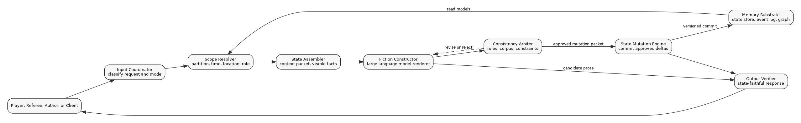
AGE combines several ideas that are individually familiar but rarely joined into one game runtime.
The first idea is partition jurisdiction. A partition is not a folder, prompt context, or retrieval bucket. A partition owns a bounded portion of state and decides what can be read, written, summarized, or exported. Spatial partitions govern physical place. Narrative partitions govern story scope. Concern partitions govern cross-cutting systems such as economy, law, faction pressure, ecology, technology, or mood. Role partitions govern who is allowed to do what.
The second idea is the property-sheet surface. The origin corpus repeatedly points toward object types, property sheets, location data, event records, resources, actors, and database partitions. This pass treats those as the working state model. A property sheet is the common surface by which authors, runtime services, and QA tools understand entities.
The third idea is authoritative time. AGE does not let prose casually decide that days, weeks, or years have passed. The World Time Authority owns the tick counter. Each partition has a TickPolicy that maps its scale to time. A Spotlight may operate in seconds, a Scene in minutes, a Locus in minutes or hours, a Realm in sessions or weeks, and an Epic in months or years.
The fourth idea is consequence-first authoring. AGEScript does not primarily branch text. AGEScript collects inputs, collapses them into bounded outcomes, commits state mutations, and gives the Fiction Constructor hooks for prose. This is the mechanism that prevents troupe play from exploding into a branch count equal to choices raised to the number of players.
The fifth idea is semantic QA. AGE must be tested by replaying stateful scenarios, not merely by checking whether code functions return. A useful certification harness must catch anchor drift, partition leakage, rule misuse, source authority failure, inventory mismatch, and time inconsistency.
A single AGE turn should be described as a transaction. The transaction begins with a request and ends with a response envelope. Internal components may use LLMs, but transaction authority belongs to the runtime.
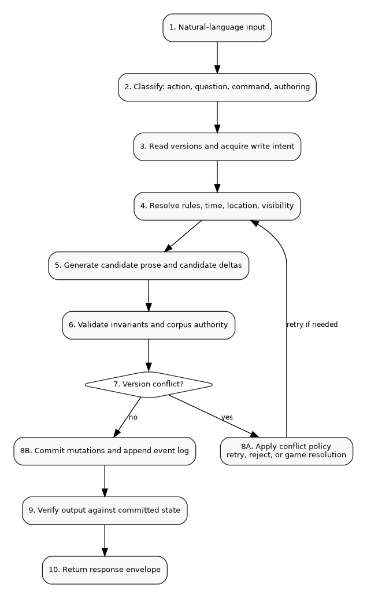
The turn procedure is as follows.
This structure makes a simple but important demand: if the response claims that something changed, the state log must show the change. If the response says the iron key moved from the bartender's belt to the player character's hand, the Object Sheet for the key, the inventory container for the bartender, and the inventory container for the player character must all change in the same committed transaction.
The MVP should begin with six property-sheet families. More can be added later, but these are the minimum required for state-authoritative play.
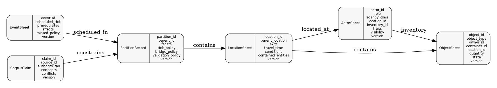
| Sheet family | What it owns | Why it is required in the first build |
|---|---|---|
| Actor Sheet | Player characters, non-player characters, factions, and system actors. | Actions need agency, permissions, location, inventory, and identity. |
| Location Sheet | Places, exits, travel costs, local conditions, contained entities, and observation rules. | Persistent play requires more than prose descriptions of places. |
| Object Sheet | Items, containers, resources, MacGuffins, tools, evidence, and environmental objects. | Inventory and consequences cannot be reliable without object authority. |
| Event Sheet | Scheduled, triggered, random, faction, and missed events. | The world must be able to act off-screen without drifting. |
| Partition Sheet | Runtime jurisdiction, tick policy, bridge policy, and validation policy. | Scope, state authority, and cross-troupe influence need explicit ownership. |
| Role Sheet | Allowed tools, response contract, citation rules, audit rules, and determinism policy. | Role behavior must be constrained without relying on prompt persona alone. |
A Location Sheet example illustrates the level of detail expected in the implementation.
sheet_type: LocationSheet
location_id: locus_boothbay_maiden_tear_footbridge
parent_location: realm_boothbay_coast
partition_id: spatial_locus_boothbay_ravine
name: "Maiden Tear Footbridge"
scale: locus
exits:
- route_id: route_ridge_path_to_footbridge
to_location: locus_boothbay_ridge_path
travel_time_ticks: 18
traversal_tags: [steep, exposed, wet_stone]
- route_id: route_footbridge_to_ravine_confluence
to_location: locus_boothbay_ravine_confluence
travel_time_ticks: 9
traversal_tags: [narrow, slippery]
conditions:
weather: cold_mist
light_level: dusk_blue
soundscape: distant_surf_and_freshwater
contained_entities:
visible_objects: [obj_rotted_rope_span, obj_iron_prayer_tag]
hidden_objects: [obj_cult_chalk_mark]
visible_actors: []
hidden_actors: [npc_cult_observer_three]
invariants:
- actors_crossing_bridge_must_check_traversal
- freshwater_sound_visible_before_stream_visible
version: 12
The Fiction Constructor may describe the bridge in many styles. It may not ignore the traversal tags, reveal hidden actors without permission, erase the travel cost, or claim a visible object is absent unless a committed mutation changed the sheet.
The origin branch distinguishes spatial, narrative, temporal, and concern partitioning. This pass presents them as one partition topology with separate facets. A DomainPartition may carry multiple facets. For example, a tavern brawl may be spatially inside a Locus, narratively inside a Scene, temporally inside a minute-scale TickPolicy, and legally under a Law concern overlay.
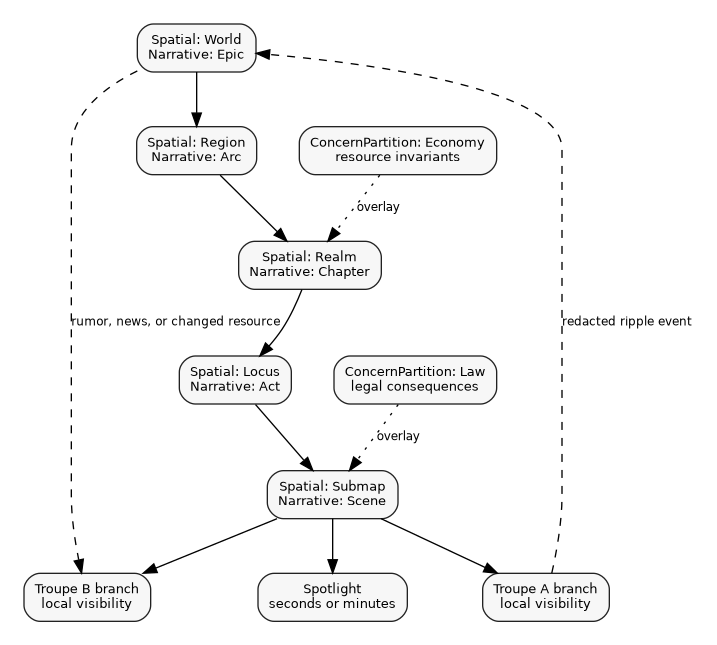
The spatial ladder is World, Region, Realm, Locus, and Submap. The narrative ladder is Epic, Arc, Chapter, Act, Scene, and Spotlight. The temporal ladder is not a separate story ladder; it is a TickPolicy attached to the active partition. The concern ladder overlays state through systems such as economy, law, faction, ecology, technology, weather, social reputation, or horror.
A partition record should include at least this information.
partition_id: partition_boothbay_locus_maiden_tear
partition_type: DomainPartition
facets:
spatial: locus
narrative: act
temporal: minutes
concern_overlays: [law_local, horror_transformation, weather_coastal]
parent_partition: partition_boothbay_realm_coast
children:
- partition_boothbay_submap_footbridge
- partition_boothbay_submap_ravine_confluence
tick_policy:
unit: minute
tick_size: 1
max_unobserved_ticks_before_summary: 60
bridge_policy:
local_events: allow
ripple_events: redact_before_export
direct_cross_troupe_state_write: forbid
validation_policy:
require_occ: true
require_source_for_rule: true
require_location_for_object_transfer: true
version: 6
This turns partitioning into an implementation contract. A service can ask whether it may mutate a property sheet because the partition declares that authority.
Time and location cannot remain prose decorations. They are causal systems. A character who travels from a sea cave to a ravine must carry objects across a route, consume time, cross possible event windows, expose or hide information, and trigger location-specific conditions.
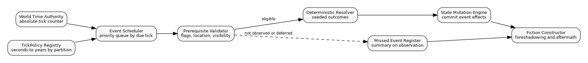
The origin Dagon branch is valuable because it stresses time and location. The play sequence has timestamps, shore movement, cave transitions, ridge movement, freshwater exposure, transformation, hidden cult activity, and final scoring. A pure transcript can remember these as narrative beats. AGE should store them as transition packets and event records.
A transition packet should be committed before the next location is rendered.
transition_packet_id: trans_boothbay_00077
actor_id: pc_marsh_reporter
from_location: locus_boothbay_devils_throat_cave
route_id: route_shoreline_ridge_to_maiden_tear
to_location: locus_boothbay_maiden_tear_footbridge
start_tick: 218
end_tick: 242
travel_time_ticks: 24
state_reads:
- location:locus_boothbay_devils_throat_cave@version:31
- route:route_shoreline_ridge_to_maiden_tear@version:9
- actor:pc_marsh_reporter@version:44
crossed_events:
- event_tide_turning@tick:226
- event_cult_observer_moves@tick:239
state_effects:
- set_location: pc_marsh_reporter = locus_boothbay_maiden_tear_footbridge
- increment_track: pc_marsh_reporter.exhaustion +1
- set_flag: transformation_silver_tracery_visible = true
- add_observation: "violet sheen faded with elevation"
This packet is stronger than a summary because it gives the next scene a verified causal basis.
AGEScript exists because multiplayer interactive narrative cannot be authored as a tree of every possible choice combination. Five players choosing from three options would create 243 combinations if handled as direct branching. AGEScript treats the scene as a state container and resolves input through aggregation.
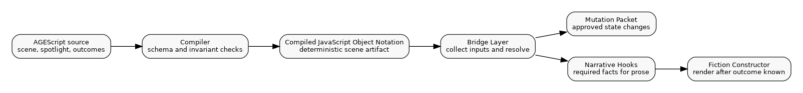
A minimal AGEScript scene has a header, anchors, input window, resolution rules, state mutations, and narrative hooks. The LLM renders after the outcome is known.
scene_id: tavern_brawl_01
plot_id: crime_pursued_by_vengeance
phase: crisis
duration:
spotlight_count: 5
location_id: locus_blackstone_tavern
anchors:
flags: [tavern_hostility, player_reputation]
actors: [npc_barmaid_elara, npc_guard_captain]
objects: [obj_player_weapon, obj_locked_back_door]
spotlights:
- spotlight_id: 1
input_mode: troupe_choice
prompt: "The guards draw steel. How does the troupe respond?"
choices:
- id: fight
label: "Engage the guards"
- id: distract
label: "Create a diversion"
- id: flee
label: "Retreat to the alley"
resolution:
- if: "count(fight) >= 3"
outcome: violent_clash
- if: "count(distract) >= 2"
outcome: chaotic_escape
- if: "count(flee) >= 3"
outcome: retreat
- default: stalemate
outcomes:
chaotic_escape:
state_mutations:
- set_flag: tavern_hostility +20
- set_location: troupe = locus_blackstone_back_alley
- set_actor_state: npc_barmaid_elara = suspicious_but_not_hostile
narrative_hooks:
- "smoke and overturned tables break line of sight"
- "Elara sees enough to remember the party"
This is not just a writing aid. It is the runtime contract between authored material, player input, resolution, mutation, and prose.
AGE should support troupe play without forcing strict turn rotation. Strict rotation is easy to schedule but often poor for narrative play. A better system uses input windows, spotlight ownership, aggregation, and conflict rules.
Each player input is classified as compatible, competing, or conflicting. Compatible actions merge into one outcome. Competing actions are ordered by role, initiative, position, or scene rule. Conflicting actions target the same state in incompatible ways and must use OCC. The result should appear as game resolution when the fiction supports it.
Example: two players claim the same relic from the same chest during one spotlight.
conflict_id: conflict_relic_claim_004
conflict_type: simultaneous_object_claim
object_id: obj_sword_of_kings
container_id: obj_black_oak_chest
client_versions:
pc_adel: 13
pc_borin: 13
server_version_at_commit: 14
resolution_policy: opposed_dexterity_test
seed: campaign_7a3f9b:spotlight_22:conflict_004
result:
winner: pc_borin
loser: pc_adel
committed_mutations:
- transfer_object: obj_sword_of_kings -> inv_pc_borin
visible_hooks:
- "both hands close on the hilt"
- "Borin pulls the relic free first"
The key is that the conflict is neither ignored nor hidden as a database error. It becomes a controlled event.
Rules and lore cannot be treated as prompt stuffing. AGE needs a corpus system that knows source authority, version, conflict, and scope. LMS-Graph stores corpus claims. CAL weighs them.
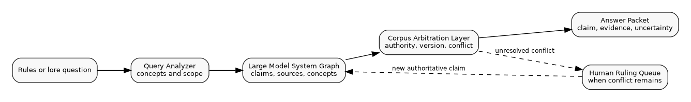
A useful CAL answer is not merely text. It should return a packet that can be audited.
query_id: cal_query_0182
question: "Can a player use a stolen key after the owner dies?"
scope:
ruleset: sarna_len_demo_rules
campaign: boothbay_demo
answer:
claim: "The key remains usable unless a rule, lock change, curse, or scene condition changes the object. Ownership changes legal and social consequences, not physical usability."
authority_tier: canonical_rule
sources:
- source_id: rules_inventory_objects_v01
claim_id: claim_object_usability_independent_of_owner
- source_id: scenario_boothbay_locks_v02
claim_id: claim_church_locks_changed_after_alarm
conflicts: []
human_decision_required: false
The runtime can then cite or use the answer without converting a vague model answer into hidden canon.
AGE needs ordinary tests for software correctness, but ordinary tests are not enough. A generated world can fail semantically while every service returns successfully. The system must be able to replay a scenario and check meaning.
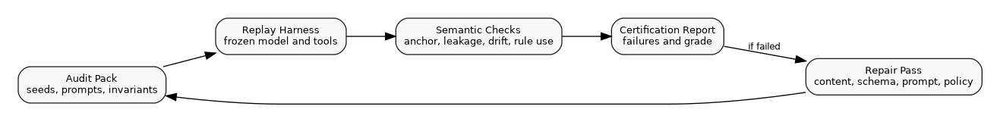
The audit harness should test at least these dimensions.
| QA dimension | Test question |
|---|---|
| Anchor preservation | Did named actors, objects, and locations remain consistent? |
| State-prose agreement | Did the response claim only committed changes? |
| Rule authority | Did a rule answer use the right source and authority tier? |
| Partition leakage | Did hidden or troupe-local information cross a boundary? |
| Time consistency | Did ticks advance according to TickPolicy and transition packets? |
| Object continuity | Did inventory and location records agree after transfers? |
| Drift velocity | How many turns before contradictions accumulate? |
| Replay stability | Can the same seed and source versions reproduce the same committed state? |
The MVP should be judged by this harness, not by subjective demo charm alone.
The MVP should prove AGE in a single bounded game environment. It should not include a marketplace, unrestricted world generation, professional Roles-as-a-Service, arbitrary agent orchestration, or large-scale public multiplayer. Those expansions depend on the core loop working first.
The first build should include the following implementation sequence.
A good first demo is not a large open world. It is a scenario that stresses the architecture: timed movement, hidden observers, inventory, environmental changes, off-screen events, rules questions, irreversible choices, and a final score that depends on committed state.
The main executive summary above is now written as a technical briefing. This appendix preserves the fuller operational explanation from the prior technical pass because it contains useful concrete turn packets, partition explanations, time handling, AGEScript examples, quality assurance notes, and development-order guidance.
The Amazing Game Engine [AGE] is a state-authoritative narrative engine. AGE uses generative prose, but it does not let generated prose become truth by itself. The engine keeps truth in structured state, validates proposed changes, commits only approved changes, and then asks a language model to render prose that conforms to the committed state.
A Large Language Model [LLM] is a model that generates or transforms text. In AGE, an LLM may propose narration, dialogue, summaries, classifications, and possible state deltas. An LLM does not directly advance time, change location, create inventory, resolve conflicts, or commit truth.
A Large Model System [LMS] is the larger operating arrangement around one or more language models. An LMS may include retrieval, graph search, tools, task routing, workspace access, adapters, and audit controls. The Large Model System Graph [LMS-Graph] is the maintained graph and relational corpus substrate inside AGE. It stores sources, concepts, rules, examples, authority tiers, versions, dependencies, conflicts, and structured facts.
The Corpus Arbitration Layer [CAL] is the AGE service that answers questions against LMS-Graph. CAL retrieves evidence, weighs authority, exposes conflicts, preserves source provenance, and identifies when a human ruling is required. CAL is used by the Rules Service, authoring tools, and quality checks.
A DomainPartition is the principal runtime partition object. It is a bounded simulation and narrative jurisdiction with owned state, a tick policy, access rules, bridge rules, validation rules, and commit semantics. DomainPartition derives from the more general AbstractPartition contract. Human-readable partition labels use a colon delimiter such as ConcernPartition:Economy. Code may use typed fields or generics rather than literal colon names.
A property sheet is a structured record that declares the state surface of an entity. A property sheet may describe a location, object, actor, resource pool, event, role, rule, or partition. The property sheet records identity, scope, owner, version, permitted mutations, dependencies, and any fields required for the active subsystem.
AGEScript is the authored scenario and scene language for AGE. AGEScript defines scenes, spotlights, resolution rules, state mutations, plot progress, and narrative hooks. AGEScript source is readable by authors but compiles to deterministic JSON for runtime execution.
A troupe is a small group of players sharing a local narrative branch. Troupe-local partitions are isolated from other troupe-local partitions. Cross-troupe influence travels through redacted ripple events routed by shared world partitions, not through direct shared scenes.
Optimistic concurrency control [OCC] is the conflict-control method used when multiple clients may attempt to change the same state. A client writes against a known version. If the version has changed, the write does not silently overwrite state. AGE either retries, rejects, or resolves the conflict through a deterministic game procedure.
Retrieval-Augmented Generation [RAG] is the common practice of retrieving source material and placing it into a model context. AGE may use Retrieval-Augmented Generation at a partition boundary, but partitioning is not RAG. Retrieval asks what material should be injected into context. Partitioning decides where truth lives, who can change it, what can cross a boundary, and how a change becomes authoritative. Retrieval is also context-expensive, so structured state reads, identifiers, projections, and cached summaries should be preferred whenever they can answer the request.
AGE is not a chatbot wrapped around a fantasy world. AGE is a simulation and narrative runtime in which structured state is authoritative and generative prose is a rendering layer. The essential product claim is that a story can remain coherent across hundreds of meaningful decisions because the system makes a hard distinction between proposal, validation, mutation, persistence, and prose. The language model can make the moment vivid. It cannot decide that the dead non-player character is alive again, that a locked chest contains a new relic, that three weeks did not pass, or that a troupe knows a secret from another troupe unless the state system says those things are true.
This distinction is the core technical advantage. Existing generative interactive fiction products often fail because prose becomes memory. The model says something; the user reacts; the next prompt contains a summary; the summary drifts; after enough turns, the world becomes a stack of negotiated impressions. AGE reverses that arrangement. A structured state store records actors, locations, objects, resources, time, events, partitions, flags, rules, and source authority. The language model receives a context packet assembled from that store. It renders a scene and may propose deltas. The Consistency Arbiter checks those deltas. The State Mutation Engine commits only approved changes. The next scene is assembled from the committed state, not from a hazy recollection of the last prose paragraph.
The first product should prove this in a narrow game domain before expanding into broader role, rules, training, or professional corpus services. A bounded game rules corpus, a small authored world, and a few tightly measured scenario paths are enough to show whether AGE can hold state where ordinary language-model roleplay collapses.
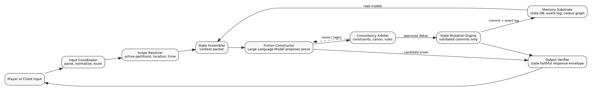
AGE must perform six jobs at the same time.
First, AGE must parse intent. Player input can be a character action, a rules question, an out-of-world instruction, a request to inspect inventory, a party vote, a content-authoring command, or an attempt to alter the system itself. The Input Coordinator normalizes the text, identifies the active mode, and routes the request. A small language model may help classify intent, but routing authority must remain deterministic because later state decisions depend on it.
Second, AGE must resolve scope. A player character is never simply in a story. The character is in a location, inside a spatial partition, inside a narrative partition, under one or more concern overlays, at a specific tick, with a known inventory, with visible and hidden information, and with permissions that depend on role and context. The Scope Resolver identifies the partitions, property sheets, event queues, rule sources, and visibility records needed for the next operation.
Third, AGE must assemble state. The State Assembler builds the context packet for the Fiction Constructor. That packet is not a transcript dump. It contains the current location sheet, visible actor sheets, relevant object sheets, active event hooks, applicable rules, recent committed facts, constraints, and a list of facts the model must not contradict. The model can still write flexibly, but it writes inside a bounded state envelope.
Fourth, AGE must generate candidate prose. The Fiction Constructor uses an LLM to write the narrative surface: description, dialogue, sensory detail, player-facing options, and explanation. It may also suggest candidate state deltas. The Fiction Constructor is deliberately not trusted with final truth.
Fifth, AGE must validate and commit. The Consistency Arbiter compares proposed output against rules, state, time, partition authority, source authority, and safety constraints. The State Mutation Engine commits approved changes with versioning, event logging, and rollback or compensation metadata. The system records what changed, who or what caused it, what rule allowed it, and what version was superseded.
Sixth, AGE must return a state-faithful response. The Output Verifier ensures the visible response does not claim uncommitted changes. If the prose says the party took the sword, the inventory transfer must be committed. If the prose says night falls, the World Time Authority must have advanced. If the prose says a distant city has fallen, a scheduled event or faction goal must have produced that state.
A player writes: "I take the iron key from the bartender while he argues with the guards." AGE should not ask the LLM whether the theft succeeds and then retrofit the world around the prose. The runtime should execute a transaction.
The Input Coordinator classifies the message as a character action with stealth and inventory implications. The Scope Resolver identifies the current ScenePartition, the LocusPartition containing the tavern, the Actor Sheet for the player character, the Actor Sheet for the bartender, the Object Sheet for the iron key, the Location Sheet for the tavern common room, and the Law ConcernPartition if local theft consequences matter. The State Assembler builds a packet showing the key is on the bartender, the bartender is distracted, two guards are present, the player is within reach, and the current lighting level is low.
The rules subsystem resolves the attempt. If the theft succeeds, the State Mutation Engine transfers the object from the bartender's inventory container to the player character's inventory container. It increments the version of both containers, records a theft event, and emits a possible ripple if the theft has future legal or faction effects. The Fiction Constructor then renders the success in prose. If the write fails because another player already took the key or because the bartender noticed the attempt, OCC creates a conflict result rather than overwriting state.
A useful response envelope would contain these fields internally:
turn_id: turn_000184
input_class: character_action
active_partition: scene_blackstone_tavern_03
world_tick_before: 10488
world_tick_after: 10489
state_reads:
- actor: pc_adel
- actor: npc_bartender_orren
- object: item_iron_key_orren
- location: locus_blackstone_tavern_common_room
resolution:
test: stealth_vs_notice
seed: campaign_7a3f9b:turn_000184
result: success_by_2
commits:
- mutation_id: mut_9281
type: inventory_transfer
object_id: item_iron_key_orren
from_container: inv_npc_bartender_orren
to_container: inv_pc_adel
new_versions:
inv_npc_bartender_orren: 18
inv_pc_adel: 42
visible_response_requirements:
- mention_key_taken
- do_not_reveal_hidden_guard_informant
- preserve_bartender_distracted_state
The user sees prose, not this packet. The packet is still the product. It is what makes the prose safe to continue.
The origin corpus repeatedly points toward configuration records, object types, locations, inventory, resources, event calendars, role specifications, and partition policies. These are not side material. They are the working memory of the engine. AGE should name them property sheets and make them the ordinary authoring and runtime surface.
A property sheet is not a flat database row. It is a controlled state surface. It declares what an entity is, where it belongs, who owns it, what can mutate it, what version is current, what invariants must hold, and which partitions may read or write it. The property sheet model is the bridge between author-friendly configuration and deterministic runtime behavior.
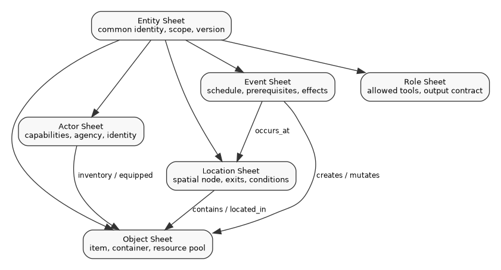
The first minimum viable product should include at least these sheet families.
| Sheet family | Required purpose | Example fields |
|---|---|---|
| Actor Sheet | Player character, non-player character, faction role, or system actor. | actor_id, agency_class, location_id, inventory_id, visible_traits, hidden_traits, permissions. |
| Location Sheet | Spatial node in the playable world. | location_id, parent_location, exits, travel_time, conditions, active_tables, contained_objects. |
| Object Sheet | Item, container, resource pool, or MacGuffin. | object_id, object_type, owner_id, location_id, container_id, durability, quantity, version. |
| Event Sheet | Scheduled, triggered, random, or faction-driven event. | event_id, scheduled_tick, prerequisites, effects, narrative_seeds, missed_event_policy. |
| Partition Sheet | Runtime boundary and authority record. | partition_id, facets, parent, children, tick_policy, bridge_policy, validation_policy. |
| Role Sheet | Role Service or Rules Service behavior contract. | role_id, allowed_tools, citation_rules, output_limits, determinism_policy, audit_pack. |
This is the point at which AGE becomes buildable. The white papers must show these sheets, not merely refer to state.
AGE partitions are the core way to prevent state drift. A DomainPartition owns a slice of simulation and narrative jurisdiction. It decides what state can be read, what proposals can be accepted, how time advances, what events can enter or leave, and what policy validates a commit.
The spatial ladder is World -> Region -> Realm -> Locus -> Submap. The narrative ladder is Epic -> Arc -> Chapter -> Act -> Scene -> Spotlight. These ladders are aligned for convenience, but they are not the same thing. A scene occurs inside a locus. An arc may span a region. A chapter may govern a realm. Concern partitions such as ConcernPartition:Economy or ConcernPartition:Law overlay those spaces and narratives by providing invariants, vocabulary, constraints, and proposed effects.
A partition is stronger than retrieval. Retrieval-Augmented Generation can place relevant text into a prompt, but it consumes scarce input context and may omit, over-rank, or mis-rank material. A partition decides whether retrieved text is allowed to matter. A partition also decides whether a change can cross from one troupe to another. A troupe can affect the world, but it should not directly overwrite another troupe's local scene. The correct route is local commit -> ripple event -> world or region partition -> aggregation and redaction -> rumor, news, market change, faction reaction, or background consequence in another troupe's partition.
AGE cannot maintain persistent worlds with floating session time. The World Time Authority owns an absolute tick counter. A tick is the smallest game-time step the system uses for scheduling. The tick counter is anchored to a calendar epoch. Players and models do not directly change the clock. The scheduler advances ticks when the action procedure says time passes.
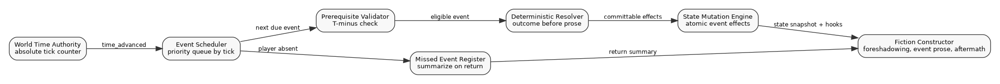
This supports event calendars. A raider force can reach city walls in two weeks. A meteor can strike at midnight in three days. A festival can begin at dawn. A faction can complete a coup if the players fail to intervene before a deadline. The event may be foreshadowed before it happens, but its outcome is resolved mechanically before the Fiction Constructor writes the event prose.
The temporal cohesion window prevents distant partitions from drifting beyond the plausible travel time between them. If two realms are three weeks apart by foot, related arc events should remain within a few weeks unless the engine deliberately creates a discontinuity and records it. This keeps realm-level stories from becoming causally incompatible.
A location in AGE is a spatial node with rules, inventory, exits, travel times, event tables, visibility, and state. The Dagon example in the origin branch shows why this matters. The player moves from harbor docks to shoreline, to sea cave, to freshwater stream, to ridge path, to footbridge, to ravine confluence. Each location has time cost, physical conditions, active transformations, tide relevance, hidden observers, and state effects. In a prose-only system, those are remembered as story flavor. In AGE, those become location records and transition packets.
A locale-to-world transition occurs when an action moves beyond the current local scene into a wider partition. The engine must create a transition packet. That packet states the origin location, destination location, route, travel time, visibility changes, objects carried, follower or observer changes, scheduled events crossed during travel, and any environmental effects. The transition packet is committed before the next location prose is generated.
transition_packet_id: trans_00077
actor_id: pc_marsh_reporter
from_location: locus_boothbay_devils_throat_cave
through_route: route_shoreline_ridge_path
to_location: locus_maiden_tear_footbridge
start_tick: 218
end_tick: 242
travel_time_ticks: 24
state_checks:
- tide_state: turning
- freshwater_exposure: false
- cult_observer_presence: possible
carried_objects:
- item_crystalline_vertebra_fragment
state_effects:
- set_flag: pc_transformation_silver_tracery_visible
- increase_track: exhaustion +1
- register_observation: "violet sheen fades with elevation"
This packet gives the Fiction Constructor the facts it needs. It also prevents the model from skipping time, changing distance, or losing carried objects.
AGEScript exists because free-form generated story cannot support persistent state by itself. Authors need a way to define scenes, spotlights, resolution rules, state mutations, plot progress, and hooks without writing every line of prose. AGEScript therefore treats a scene as a state container rather than a text knot.
The most important AGEScript idea is branch collapse. Five players choosing among three options should not produce 243 lasting branches. AGEScript aggregates inputs into a small number of meaningful outcomes. Each outcome contains explicit state mutations and narrative hooks. The LLM writes the rendering after the outcome is known.
scene_id: tavern_brawl_01
plot_id: vengeance_pursuit
phase: crisis
location_id: locus_blackstone_tavern
spotlight:
id: spotlight_01
type: troupe_choice
prompt: "The guards draw steel. How does the troupe respond?"
inputs:
- id: fight
label: "Engage the guards"
- id: distract
label: "Create a diversion"
- id: flee
label: "Retreat to the alley"
resolution:
- condition: "count(fight) >= 3"
outcome: violent_clash
- condition: "count(distract) >= 2"
outcome: chaotic_escape
- condition: "count(flee) >= 3"
outcome: retreat
- default: stalemate
outcomes:
violent_clash:
state_mutations:
- update_flag: tavern_hostility +50
- update_item: player_weapon_durability -10
- set_actor_state: npc_elara = hostile
narrative_hooks:
- "guards drew first blood"
- "Elara witnessed the violence"
Multiplayer AGE is not solved by taking turns in a strict rotation. Strict rotation feels fair on paper but becomes slow and artificial. AGE needs simultaneous input, spotlight logic, and deterministic merge rules.
The Input Coordinator collects player inputs during a spotlight window. The resolution system classifies the inputs as compatible, competing, or conflicting. Compatible actions can merge. Competing actions can be ordered by initiative, role assignment, position, or another rule. Conflicting actions that target the same state use OCC. A conflict should become a game event where appropriate, not a silent technical error.
The common example is two players trying to take the same item. A conventional database might reject one write. AGE should detect the version conflict and resolve it through a mechanical procedure if the fiction supports simultaneous access. The result is recorded, then rendered.
conflict_id: conf_00122
conflict_type: simultaneous_object_claim
object_id: item_sword_of_kings
container_id: chest_black_oak
client_versions:
pc_adel: 13
pc_borin: 13
server_version: 14
resolution_policy: opposed_dexterity_test
result:
winner: pc_borin
loser: pc_adel
commits:
- transfer_object: item_sword_of_kings -> inv_pc_borin
visible_hook: "Both hands close on the hilt at once; Borin wrenches it free first."
AGE needs two kinds of truth. World truth lives in runtime state. Corpus truth lives in LMS-Graph and is mediated by CAL. A game engine needs both. World truth says the sword is in Borin's inventory. Corpus truth says what rule applies to simultaneous object claims, which version of the rules is authoritative, which exception overrides the default, and whether a Referee ruling has been recorded.
The first CAL deployment should be a Rules Service for the game corpus. The Rules Service should answer player and Referee questions with source-backed responses, not model memory alone. It should return an answer envelope containing the interpreted question, retrieved sources, authority tier, conflicts, rule result, confidence, and human decision point if the corpus is ambiguous.
rules_answer_id: ra_00091
question: "Can two players grab the same item in one spotlight?"
corpus_scope: age_rules_mvp
retrieved_sources:
- source_id: wp_multiplayer_merge_semantics
authority: design_canon
- source_id: rules_inventory_occ_v01
authority: implementation_rule
answer: "Use optimistic concurrency control. If the fiction supports simultaneous access, resolve through the configured conflict policy rather than silently rejecting either player."
conflicts: []
human_decision_required: false
AGE can pass ordinary software tests while still failing as a narrative engine. It must therefore test semantic consistency. Semantic Quality Assurance checks whether the system preserved anchors, avoided partition leakage, used source authority correctly, resolved entities consistently, and kept drift velocity low.
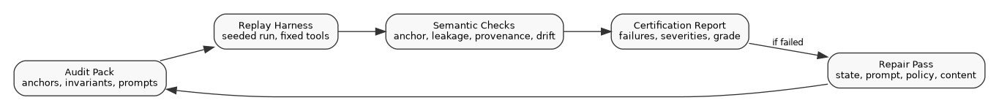
The minimum audit pack should include a partition manifest, entity and facet schemas, invariant catalog, audit prompt pack, seeded replay logs, expected state deltas, and failure severity thresholds. This is how AGE can be certified, compared to vanilla LLM runs, and sold as something more reliable than an improvisational chatbot.
The Minimum Viable Product [MVP] should not attempt an infinite world, unrestricted player count, full marketplace, full role platform, professional knowledge system, or arbitrary agent system. The MVP should prove state authority and replayable coherence in one constrained game environment.
The MVP should include:
This is sufficient to test the central claim: AGE can maintain coherent, state-authoritative narrative play longer than generative-first systems.
The first risk is engineering scope. AGE is a real system, not a prompt trick. It requires database design, event sourcing, schema discipline, authoring tools, runtime orchestration, model prompting, and quality automation. The mitigation is a narrow MVP that proves only the necessary loop.
The second risk is authoring burden. Property sheets, AGEScript, event tables, and partition policies can overwhelm ordinary writers. The mitigation is a role-aware authoring user experience that exposes friendly forms while storing rigorous YAML or JSON behind the interface.
The third risk is false determinism. A system can record seeds and still drift if prompts, models, tools, or source versions change. The mitigation is replay envelopes that record model versions, prompt templates, toolchains, source versions, random seeds, and commit logs.
The fourth risk is sterile prose. Too much constraint can make the language model feel like a formatter. The mitigation is to constrain facts, not style. The Fiction Constructor should have freedom in voice, sensory detail, pacing, and dialogue when those choices do not alter truth.
The fifth risk is multiplayer dilution. Large groups reduce individual narrative agency. The origin branch recognizes that one to three players is the strongest range for narrative-depth campaigns. Larger groups need ensemble or persistent-world design rather than one unified deep campaign.
Build the runtime before the marketplace. Build state authority before role polish. Build replay before scale. Build rules arbitration before professional claims. Build one excellent scenario path before generalized world generation.
The strongest first demo is an authored investigation or adventure with visible inventory, timed events, location changes, resource depletion, hidden observers, and a few irreversible choices. The Dagon material in the origin branch is a useful shape for this because it already stresses time, location, transformation, carried objects, environmental conditions, hidden cult reaction, and psychological degradation.
AGE should be judged by whether it can replay that scenario, preserve its state, explain its rulings, and continue without contradiction after many turns. If it can do that, the system has a foundation.
A useful AGE demonstration should not begin with a generalized fantasy sandbox. It should begin with a constrained route that forces the engine to show its state discipline. The Dagon-style investigation is suited to this because it makes time, movement, contamination, carried objects, hidden observers, and psychological pressure visible in ordinary play.
The demonstration path should be instrumented as follows.
| Stage | Visible scene | Required state proof |
|---|---|---|
| Harbor docks | The player begins investigation at a known time. | Location Sheet loaded, world_tick set, inventory initialized. |
| Shoreline route | The player walks toward the cave. | Transition packet records travel time and route conditions. |
| Cave entrance | Tide and cave access matter. | Location Sheet checks tide_state and route availability. |
| Cave interior | Strange material and object discovery occur. | Object Sheet created or revealed; contamination flag increases. |
| Freshwater stream | Freshwater temporarily suppresses transformation. | Condition track mutation commits before prose. |
| Ridge path | Distance from sea changes environmental effects. | Location condition changes and carried object state updates. |
| Footbridge | Local water, moonrise, and observers converge. | Event scheduler and hidden observer visibility rules apply. |
| Ravine confluence | The plot object reveals memory or truth. | MacGuffin binding triggers plot phase proposal. |
This path should be replayed with a fixed seed. The replay should confirm that the same route costs the same time, the same carried object remains present, the same condition track changes when exposed to freshwater, and the same scheduled nightfall or moonrise events appear when their ticks arrive. The prose may vary within allowed style, but the state must not drift.
The first runtime should expose a small set of internal service contracts. These are not public application programming interfaces yet. They are the seams that allow engineering teams to build and test the engine.
| Service | Required operation | Result |
|---|---|---|
| Input Coordinator | classify_input(turn_text, session_state) | input class, actor, mode, candidate action. |
| Scope Resolver | resolve_scope(actor_id, action_class) | active partitions, visible entities, applicable rules. |
| State Assembler | build_context_packet(scope_id) | structured packet for the Fiction Constructor. |
| Fiction Constructor | render_candidate(context_packet) | candidate prose and proposed deltas. |
| Consistency Arbiter | validate(candidate, context_packet) | approved deltas, rejected claims, revision instructions. |
| State Mutation Engine | commit(approved_delta) | commit id, new versions, emitted events. |
| Output Verifier | verify_output(candidate_text, commits) | visible response envelope or rejection. |
| Replay Harness | replay(turn_id or script_id) | state comparison and semantic audit results. |
These interfaces should be built with strict logging. Every operation should record input identity, source versions, active partitions, model version where relevant, output hashes, and state versions. Without that, AGE cannot distinguish deterministic failure from ordinary model variation.
The engine should not be built as one unstructured document store. The first implementation can be pragmatic, but the conceptual stores must remain separate.
Current world state is mutable by controlled commits. Event logs are append-only. Corpus sources are versioned and authority-ranked. Vector retrieval indexes are read-only aids and should be rebuildable from source. Replay records are audit artifacts. Projection stores are disposable read models. This separation lets AGE answer a crucial debugging question: did the problem occur in the state, the source corpus, the projection, the model output, or the audit harness?
AGE should not expand into a marketplace, professional corpus service, or arbitrary role platform until the core game runtime proves the following:
The most important word is preserve. AGE does not win because it generates more text. It wins if it preserves the world while using generated text.
AbstractPartition: The conceptual partition contract from which concrete AGE partition families derive.
Actor Sheet: A property sheet that records actor identity, agency, location, inventory relation, traits, visibility, and version.
Amazing Game Engine [AGE]: A state-authoritative narrative engine that renders prose from committed structured state.
AGEScript: AGE's authoring and runtime scene language for spotlights, choices, aggregation, outcomes, state mutations, and narrative hooks.
Application Programming Interface [API]: A service contract that defines request packets, response packets, allowed operations, and failure behavior.
BridgePolicy: A partition policy that controls how events, summaries, and state effects cross partition boundaries.
Corpus Arbitration Layer [CAL]: The service that weighs source authority, resolves or exposes source conflict, and returns auditable rule or lore answers.
DomainPartition: A runtime partition that owns bounded state, time policy, bridge policy, and mutation authority.
Event Sheet: A property sheet that records scheduled, triggered, faction, random, or authored events.
Fiction Constructor: The rendering component that turns committed state and outcome hooks into prose.
JavaScript Object Notation [JSON]: A machine-readable structured data format used by AGE examples and compiled runtime artifacts.
Large Language Model [LLM]: A statistical text model used by AGE for rendering, classification, and candidate generation, but not as final state authority.
Large Model System [LMS]: The full model-support system around an LLM, including retrieval, tools, graph search, routing, memory, and audit.
Large Model System Graph [LMS-Graph]: The AGE graph of sources, claims, concepts, versions, dependencies, and conflicts.
Location Sheet: A property sheet that records place identity, parent location, routes, travel time, local conditions, contained entities, visibility, and version.
Minimum Viable Product [MVP]: The smallest implementation that proves AGE's state authority, partitioning, time, location, AGEScript, corpus arbitration, replay, and QA.
Object Sheet: A property sheet that records item identity, object type, owner, container, location, state, access rules, and version.
Optimistic Concurrency Control [OCC]: Version-checking method that prevents silent overwrite when concurrent clients mutate the same state.
Property Sheet: A structured state record for an entity, object, location, event, partition, or role.
Quality Assurance [QA]: The testing and certification practice used to verify state, rules, replay, source authority, and output fidelity.
Retrieval-Augmented Generation [RAG]: A method that retrieves source material for model context. In AGE, Retrieval-Augmented Generation can support state assembly and corpus arbitration, but it consumes model context and does not replace partition authority.
Role Sheet: A property sheet that records role permissions, response contract, tool permissions, audit rules, and output modality.
State Mutation Engine: The component that commits validated state deltas, increments versions, and appends event log records.
Structured Query Language [SQL]: The relational database language used in AGE schema sketches.
TickPolicy: A partition's rule for mapping narrative scale to time units.
World Time Authority: The runtime authority that owns the absolute tick counter.
YAML Ain't Markup Language [YAML]: A human-readable data format used for AGE examples and authoring sketches.
This document is built from the AGE origin branch retained in _resource/origin_branch/Archive.zip and _resource/origin_branch/extracted/.
The AGE style requirements are stated in 00_Meta/00_AGE_STYLE_GUIDE.md. That file carries the applicable rails adapted from the SH44SER / DXD style guide retained in _resource/style_guides/00_SH44SER_STYLE_GUIDE.md.
The presentation standard is informed by the comparison systems papers retained in _resource/comparison_whitepapers/. Those papers include Mesos, Cassandra, Spanner, Bigtable, MapReduce, and Chubby reference material supplied by the user.
The generated PDF exports are retained inside this archive under 90_PDF_Exports/.